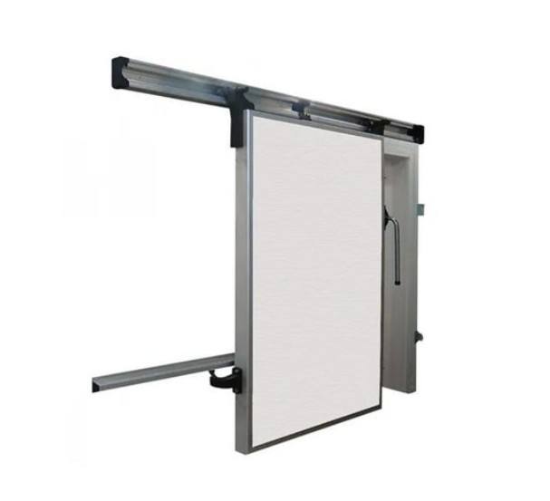
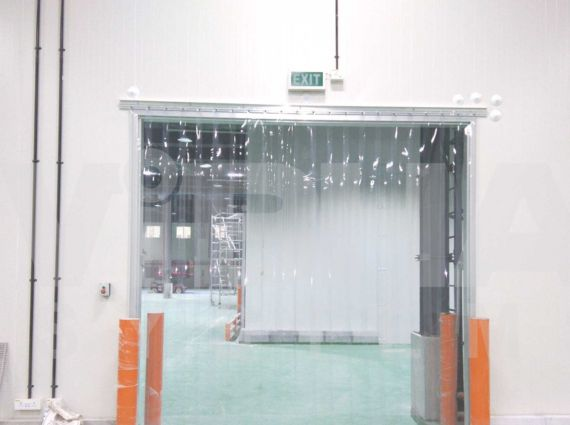

Porte Coulissante
Idéale pour les passages fréquents. Ouverture latérale sans encombrement.
- Ouverture 180°
- Seuil chauffant optionnel
- Fermeture automatique
- Vitre de vision optionnelle
Épaisseur
80-200mm
Dimensions
Sur mesure

Porte Battante
Solution économique pour petites chambres. Double paroi isolée.
- Ouvrant simple ou double
- Poignée poussoir anti-panique
- Joint magnétique
- Relevage automatique
Épaisseur
80-150mm
Dimensions
Sur mesure

Rideau à Lanières PVC
Perméable au passage, barrière thermique. Économique et pratique.
- Lanières transparentes ou opaques
- Antistatique
- Résistant aux UV
- Facile à remplacer
Largeur lanière
200-400mm
Épaisseur
2-4mm

Porte Rapide
Ouverture ultra-rapide pour minimiser les pertes de froid.
- Vitesse 1-2 m/s
- Détection automatique
- Toile PVC isolante
- Auto-réparable
Vitesse
1-2 m/s
Dimensions
Jusqu'à 6x6m